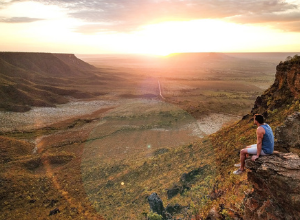
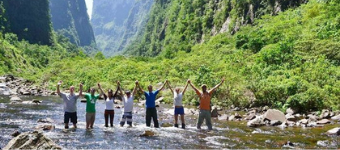
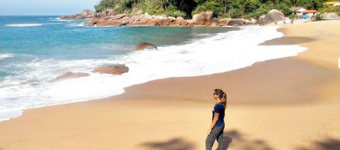

Clique sobre os pontos indicados no mapa do Brasil para conhecer um pouco sobre cada lugar

Considerada a trilha mais linda do Brasil e da América do Sul, o trekking no Vale do Pati percorre uma área do exuberante Parque Nacional da Chapada Diamantina, no estado da Bahia, passando por muitas de suas mais incríveis paisagens, que incluem vales, montanhas, cachoeiras e piscinas naturais, vegetação de mata atlântica, entre tantas outras belezas que existem nessa região. Apesar de ser um percurso um tanto difícil e cansativo devido à sua extensão, que é de setenta quilômetros (você pode fazê-lo em quatro a oito dias), é uma aventura extremamente recompensadora e você ainda terá a oportunidade de ver cenários de tirar o fôlego como o Mirante do Pati e as Águas Claras (na rota mais curta de quatro dias), o Cachoeirão e a Cachoeira do Funil (na rota que dura cinco a seis dias), e a Cachoeira do Lajeado e o Poço Azul (na rota mais completa de oito dias).
Íngreme e considerada a trilha mais difícil da região, tem extensão de 34 km até chegar ao mirante da serra, passando por áreas arenosas que serão origem ao Jalapão. A dificuldade da subida é recompensada pela vista esplendorosa do pôr do sol. A trilha é cercada por trechos demarcados, cordas e paradas de descanso. É indicado proteção solar e água para se manter hidratado durante o percurso desafiador. A descida também exige cuidados por causa da grande quantidade de pedras soltas, sendo aconselhável ir de tênis.
Aparados da Serra, ou Parque Nacional de Aparados da Serra, tem uma localização geográfica interessante – está localizado na fronteira natural entre Rio Grande do Sul e Santa Catarina e é o limite vertical da Serra Geral (formação rochosa que abrange o Brasil, Uruguai e Argentina) – e, por isso, abriga paisagens naturais impressionantes, compostas por imponentes desfiladeiros e pela maior quantidade de vertentes de águas cristalinas do país. A trilha do Rio do Boi passa por todos esses encantos em um percurso de oito quilômetros, onde é preciso atenção durante a caminhada, que é feita entre pedras no interior de um famoso cânion dessa região (o Cânion Itaimbezinho) e ao final, você poderá observar de perto duas belíssimas cachoeiras, a das Andorinhas e a Véu da Noiva.

Um dos principais e mais interessantes passeios do Parque Nacional da Serra da Bocaina, que fica na divisa entre os estados do Rio de Janeiro e de São Paulo, a Trilha do Ouro é um antigo caminho colonial do século XVII construído por índios para escoar ouro que vinha de Minas Gerais; atualmente, é uma travessia cênica e famoso atrativo cheio de história e paisagens naturais. A trilha, que percorre a Serra da Bocaina de ponta a ponta em um percurso de cinquenta quilômetros, tem um grau de dificuldade de moderado para alto. Apesar de não existirem trechos de dficuldade técnica, é uma caminhada extensa que dura 3 dias e passa por uma região em terreno acidentado. Mas fique tranquilo, todo seu esforço físico é muito recompensado com belos lugares históricos, como as fazendas centenárias e ruínas de um antigo engenho de cana-de-açúcar, e as mais lindas cachoeiras da região, como a Santo Izidro, a dos Veados e a das Posses.
A Ponta da Joatinga se trata de uma península situada em Paraty, ao sul do Rio de Janeiro, que vai até a Vila de Laranjeiras, próxima à Trindade, em um percurso extremamente bonito que passa por montanhas, praias desertas, cachoeiras e uma vasta área preservada e protegida de mata atlântica. Essa travessia pode durar até três dias para ser percorrida, pois são mais de vinte quilômetros de trekking de grau moderado a difícil, dependendo do seu nível de experiência, mas as paisagens que você encontrará no caminho são tão lindas que você não vai querer que essa aventura acabe nunca – você conhecerá atrativos como as praias Martim de Sá e Ponta Negra, a Cachoeira do Saco Bravo e muitas outras atrações exuberantes.
